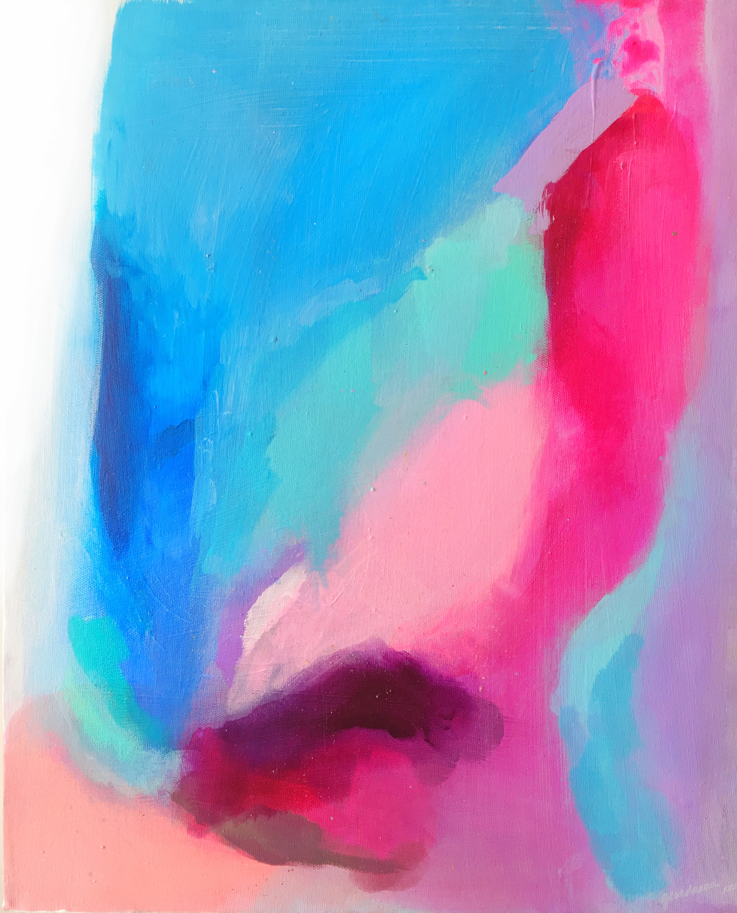

Personal Cosmography
Collective vs Individual
I mainly grew up in an environment that did not have the patience and culture for individualized learning. Everyone was compared on the same few metrics and learned the same exact few things. In the instance that you did not perform well in these metrics, then less attention will be put on you. I never enjoyed this environment, as I could never just fit into the categories like everyone around me. It was infuriating being pressured by everyone what I had to think, learn, do, and wear for many years. At the same time not being given the opportunity to explore new things. However, I learned to live with it. In my own time and with the internet I looked for my passions. Against my wishes, I learned that I had to play the game everyone else was playing to get what I wanted. I got decent playing the game in my own way, and finding my passion helped motivate me. I understand why things are the way it is where I grew up and I’m grateful for it. However, I’m also glad that I managed to find my own unique passions by breaking away from the pack.
Innovation vs Tradition
Growing up I’ve always lived by work smart, before I have ever learned of the term. I’ve always disliked tradition in various facets in my life that I find are irrelevant. I am obsessed with productivity and technology that make me more efficient. In my daily life I look for ways to delegate tasks to technology. I wasn’t nearly the best at many things. So I wanted and had to do things differently in order to be better. Because of this I had to come up with new ways and things to do. However, after trying to differentiate myself to the point of being contrarian. I started to appreciate orthodox ways that I found were the best way. A lot the times the traditions that I was taught might have seen useless, but they usually had an underlying intention of instilling some form of good habit. I managed to become aware of a balance between creating new methods to do things and following the ways that I was taught.
East vs West
It might sound like an over hashed narrative, but I’ve always been very conflicted between my cultural heirtages. I was born in America and my parents also lived in America for more than a decade. However, I moved back to Taiwan in an early age. The communities that I grew up in either had a similar background or were distinctly Taiwanese. The school I went to was one of a kind as it was a public school with an American curriculum. So there were both students who were born in America and Taiwan. There was always inconsistencies in what I valued and believed in growing up because of this. On one day I think western values are far superior, in other days I think eastern values are something that I am more in touch with me because of my heritage. Growing up in Taiwan eastern values more dominated my thought and it shaped what I believed I wanted in life. Going back to America for college has changed that, as it was the first time in my life where western values were the hegemony. Because of that I have largely reevaluated what it is I want in life and what I value. Even to this very day I am still conflicted by this. I want to value my own personal goals and happiness, but I still want to get along with the members of my family. There are times when I don’t know which cultural identity to associate with. The idea of having multiple cultural identities is awkward for me. I don’t know if I am not being genuine when I say I’m American or Taiwanese. The Eastern versus western dynamic has played a large into shaping who I am today.

Duality, Balance, and Inconsistencies
My values and beliefs have been shaped by various conflicting dynamics resulted from my upbringing. I’ve learned that there are two sides too many things. It’s in my best interest to take account both sides and strive for a balance. In the process for striving for balance, there will be inconsistencies. And these inconsistencies are fine, they are a natural part of coming in terms of who I am. Since I’m still young, I’m still learning and discovering more about myself.